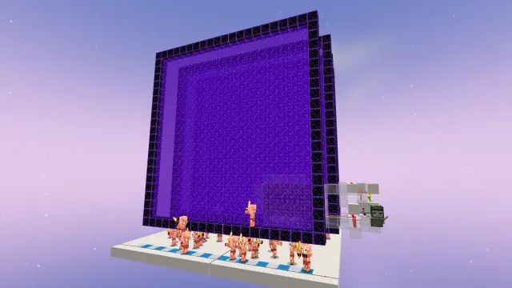
僵尸猪灵，旧称僵尸猪人（简称猪人），是 Minecraft 游戏中猪灵的僵尸化变种。
在这篇文章里，我们将简单地介绍僵尸猪灵的相关生物机制，并详细阐述通过快速点燃下界传送门驱动的猪人塔究竟原理为何，而现在的设计又是如何使其高效又稳定的。
我们简单了解一下僵尸猪灵的生成机制：
每只僵尸猪灵在自然生成时有5%的概率生成为幼年僵尸猪灵。大部分僵尸猪灵生成时都手持金剑，有5%的概率手持金矛。
僵尸猪灵以2-4只为一组，在下界荒地和绯红森林生物群系中亮度等级不高于11的地方自然生成，但不能生成在下界疣块或菌光体上。
自然生成的僵尸猪灵不太好做刷怪塔。然而，下界传送门也可以生成僵尸猪灵 ，并且效率更高。
每个下界传送门方块在每个随机刻中，有极小的概率生成僵尸猪灵：
简单难度
普通难度
困难难度
它们会在传送门的东面或南面（取决于传送门面朝哪个方向），比传送门最下方黑曜石高一格的位置生成，并且无法用方块阻碍其生成。
而在基岩版中，点燃下界传送门瞬间，每个下界传送门方块也会有一次同样概率的生成尝试，通过反复激活和破坏下界传送门可以大量生成僵尸猪灵。
但这样生成的僵尸猪灵会占用生物上限，且由此生成的僵尸猪灵在15s内不能被传送门转移到下界。
由于bug，僵尸猪灵不能在低于Y=0的下界传送门中生成。（MCPE-149718）
另外，26.0+的版本有0.75%概率生成一种不能上矿车的特殊僵尸猪灵变种。（MCPE-236034）
我们直接贴合视频实战讲解背后的主要原理。现在，最常用且稳定高效的猪人塔就是这个了：
为什么这个猪人塔要看方向？为什么传送门要均匀跨2个区块，并做成22*22大小？为什么要做一个22*21的门？传送门的引火架为什么长成这样？为什么发射器喷射细雪桶的频率是2.5Hz（0.4s/次）？且听我细细道来。
因为传送门是靠熔岩在可蔓延方块上产生火焰引燃的，而火焰蔓延的检查方向顺序是：
东＞西＞上＞下＞南＞北
所以视频开头要确定建设方向，以此最大程度保证引燃成功率。（其实剩下五个方向都用方块挡住以后影响也不大）
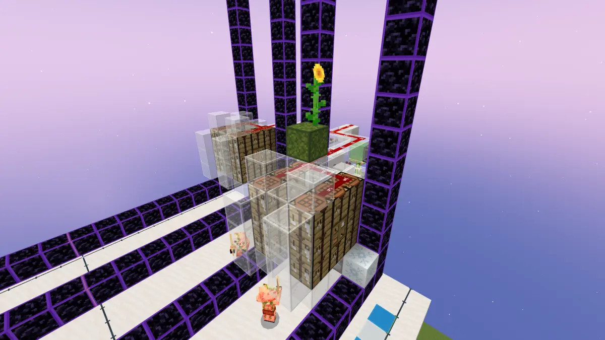
视频中的传送门为什么要正好跨区块呢？左右两边多一些少一些不行吗？跨3个区块可不可以呢？
这就牵扯到本文的重点：计划刻。
生成传送门时，每个下界传送门方块都会产生一个计划刻（Pending Tick，简称pt，Java版又称为Scheduled Tick）。一个区块内，每游戏刻（0.05s）共有100次的计划刻处理上限。
计划刻执行时调用的是函数A（见文章末尾），这个函数最后两行就是尝试生成猪人，每个计划刻都会调用这个函数。
在此之前，我们需要了解一下发射器的性质：发射器完成一次细雪桶的【喷出/收回】，总共需要 0.4s 的时间：
0.1s 喷出，0.2s 冷却，0.3s 收回，0.4s 冷却
那么已知细雪桶破门器的运行频率为 2.5Hz（即单次工作周期 T = 0.4s），单个游戏刻时长 t = 0.05s / gt，且单游戏刻最大计划刻吞吐量为 N = 100（计划刻/ gt），则一个破门周期内总计划刻数 C 的计算如下：
结论：每个区块0.4秒破门工作周期内，总共可以处理800个计划刻。
我们能做的，就是尽量让下界传送门占满这800个计划刻，吃满计划刻不就能达到僵尸猪灵生成效率最大化了吗？
[MinecraftBE]猪人塔太慢？太卡？如何解决？拿数据说话！
以视频为例，假设有两个横跨三区块（3/16/2）的下界传送门，高21格，那么点一次门，中间的区块总计产生有 672个计划刻。如果发射器也是 2.5Hz 工作，那么就是 0.2s开门，0.2s关门，在此期间消耗 400个计划刻，还剩的 272个计划刻由于传送门关闭，不符合僵尸猪灵生成条件，就浪费在关门期间了。
如果你疯狂堆叠了大量传送门，因为区块每gt消耗的计划刻是有限的，而开关一次传送门后，计划刻又没有消耗完，那就会造成PT堆积。常见的情景就是你开了一会儿猪人塔，哪怕已经关机了，打开的下界传送门还在源源不断地刷僵尸猪灵。遇到这种情况你可得小心了：pt堆的太多，会对存档造成不可挽回的损害！
所以直接说结论：传送门不是堆的越多越好，一个区块内能处理的计划刻和僵尸猪灵生成量是有限的。为了最大限度地压榨僵尸猪灵生成效率，我们就要均分下界传送门，同时控制每扇门在 22*22 的大小上（400个传送门方块），这当然是为了精准地控制计划刻。
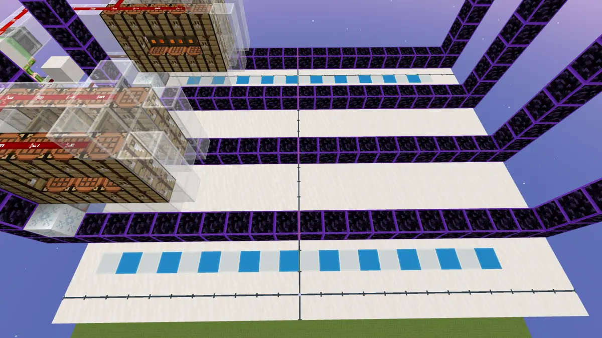
可你别忘了，咱们上边的猪人塔也是 2.5Hz 的啊？为什么她就不会浪费计划刻呢？
答案就是：侦测器、发射器、投掷器这些也都属于受计划刻影响的元件！甚至熔岩其实也受计划刻影响！
那就意味着，巧妙的短时间pt堆积，可以让发射器执行的时间变化，在同一秒内完成细雪桶的喷出、收回以及熔岩点火！
700及以上个传送门方块的计划刻提供了完美堆积的pt，而这样的破门器会保持传送门会一直亮着！僵尸猪灵的生成也完全不会被浪费！
但你还得小心，毕竟发射器这东西也消耗pt，所以你需要在破门器的区块里减少一列传送门，在给熔岩预留 门数/2（向上取整）*3 个pt外，还需要给发射器预留 门数*2 个pt，这个区块也千万不要造其他的东西避免影响到pt。
4门需要预留出来的pt数量是：4*2（发射器）+ 2*3（引火架）
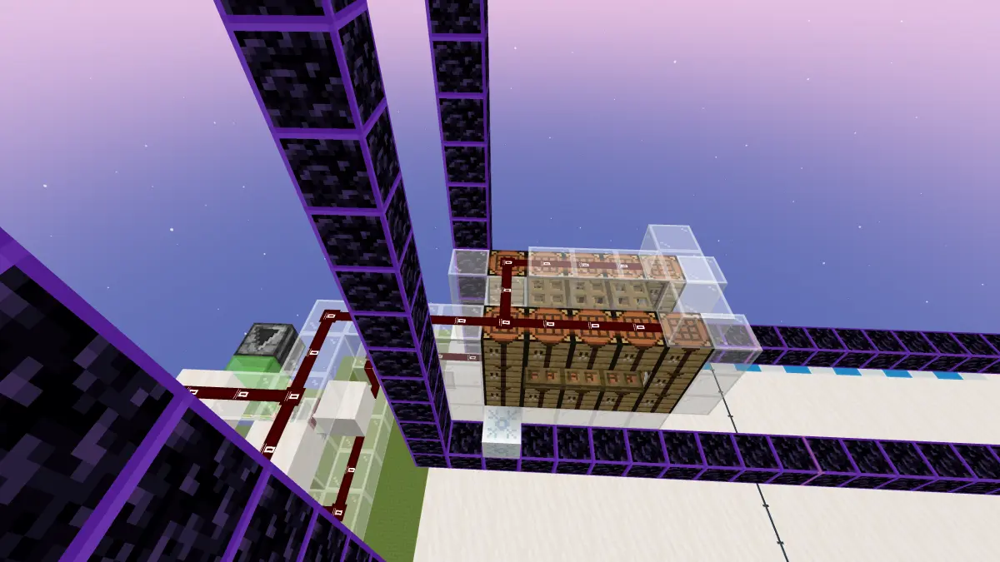
那么，我们清楚了下界传送门和破门器的原理，还剩一个问题：引火架。
虽然用燧石和铁锭在合成器内合成打火石，再用发射器点燃传送门也是可行的，但毕竟消耗了材料。什么东西不消耗材料就能自动实现传送门点火呢？那就是熔岩。
在基岩版中，熔岩每次触发时，会检查自己正上方一格是否为空气或可燃方块，否则不会点火。之后在以熔岩为中心的 3×3×3 立方体内随机取 10 个方块（每次独立均匀随机，可重复），一旦取到可燃方块，就按 +X、−X、+Y、−Y、+Z、−Z 的顺序检查它的 6 个正交相邻方块，遇到第一个空气就在那里生成火并立即结束。因此火焰最远可以出现在距熔岩水平 2 格处（5×5 的四个角除外），或竖直 2 格处（此时水平不超过 3×3）；而可燃方块本身必须落在 3×3×3 内。火焰生成不检查下方支撑或合法位置，所以可以悬空。
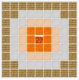
像工作台、活板门这一类方块，可以蔓延火焰，但其本身不会被烧毁。
虽说如此，但是自然状态下的熔岩蔓延火焰速度很慢，怎么能让速度快一点呢？那就是——熔岩活化。
你可能听说过，高频红石元件的nc更新可以让熔岩流动速度变快，刷石机苔藓机经常用得到这个特性。
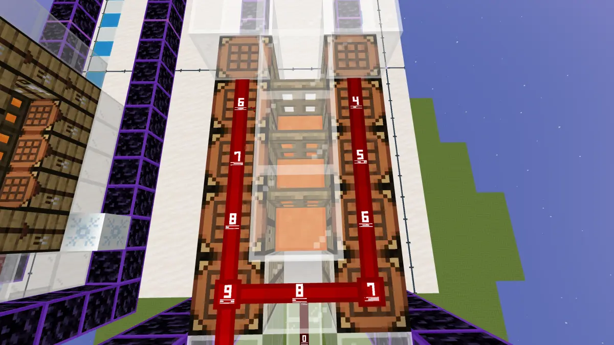
1.21.70前，流体分为静态流体与动态流体。静态流体受到nc更新后会变成动态流体，同时产生 2pt。动态流体受到pt更新后会变回静态流体。
刷石机中流体的活化其实是：流体的两个pt之间，插入了第三方的pt。 大致时序是这样： 0gt：静态流体受到nc更新，添加2个 ngt后执行的pt，同时变成动态流体； ngt：第一个动态流体的pt执行，动态流体变成静态流体，并尝试流动（熔岩会额外尝试点火）；来自第三方的pt执行，产生nc更新，静态流体添加2个 ngt后执行的pt，同时变为动态流体；第二个动态流体的pt执行，动态流体变成静态流体，并尝试流动与引火。这套流程过后，流体依旧是静态流体，但会多出两个 ngt后执行的pt。在 ngt时间内，如果流体受到nc更新，此时会同时出现4个pt，也就是流体在一个周期内可以两次流动，这种情况重复多次就是流体的活化。动态流体受到nc更新不产生pt。
1.21.70前的熔岩需要隔开单间，因为静态流体和动态流体之间的转化也会产生nc更新，具体来说设计是这样的：
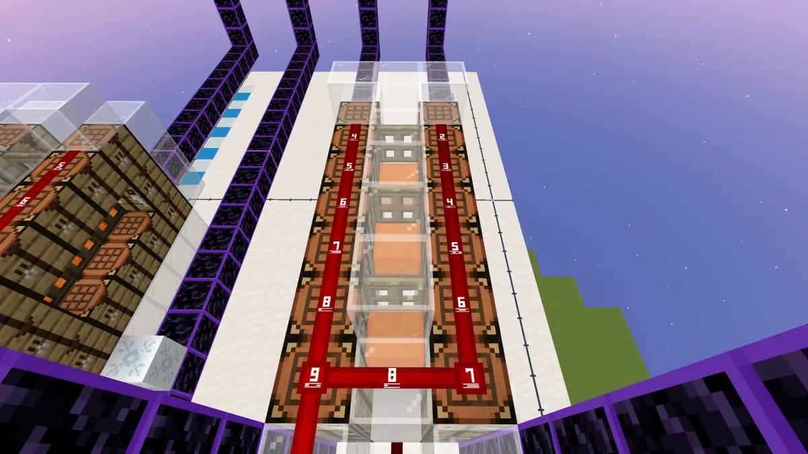
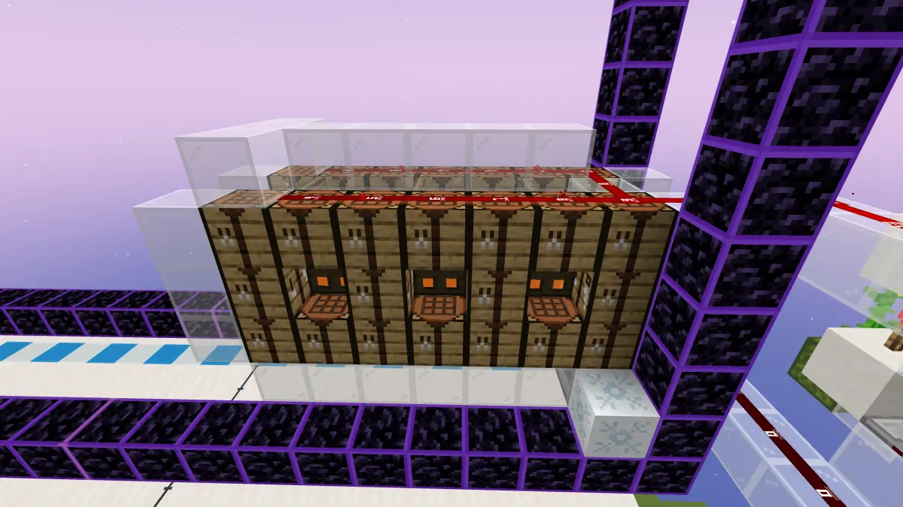
这样的架构1.21.70以前需要叠四层并且设置延迟，因为熔岩的pt在30gt后，2.5hz每层之间延迟8gt，3.33hz每层之间延迟6gt，总的时钟分别是32gt与30gt，1.21.70以后按图中来就行了。
三个岩浆点亮两个门的概率是：
1.21.70后，流体不再区分静态流体与动态流体。只要受到nc更新，就会添加1个 ngt后执行的pt。
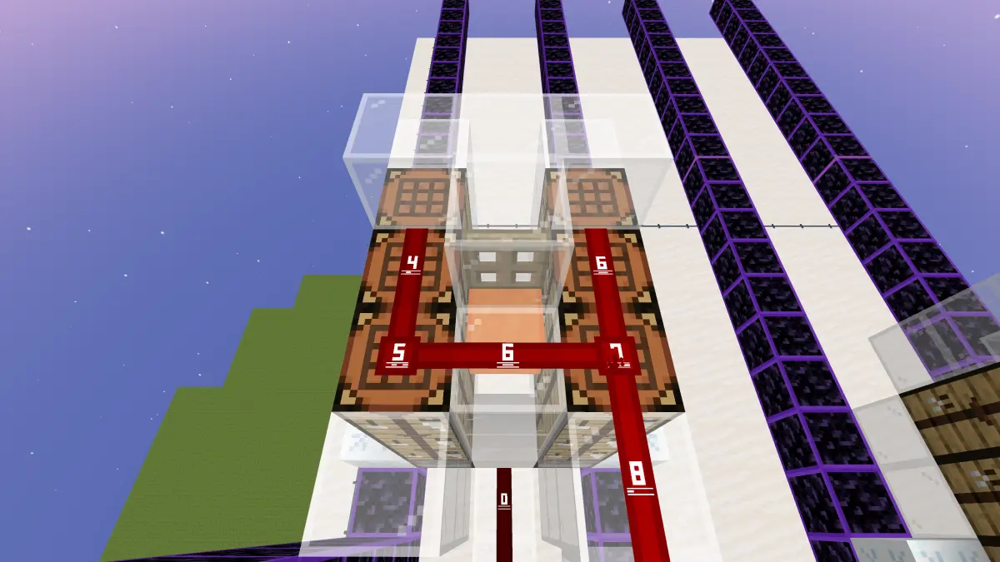
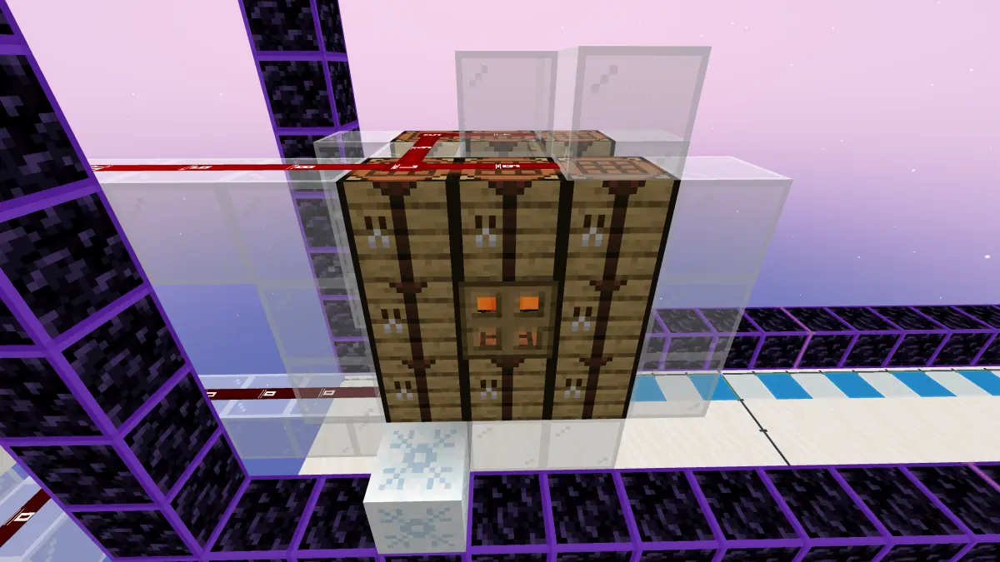
1.26.10后，同一gt内，同一坐标，流体只能添加一个pt。你可以做1.21.70之前的版本，或是干脆把结构连起来：
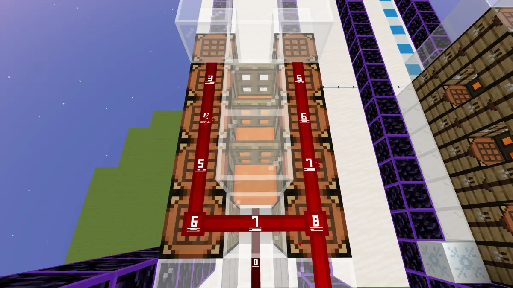
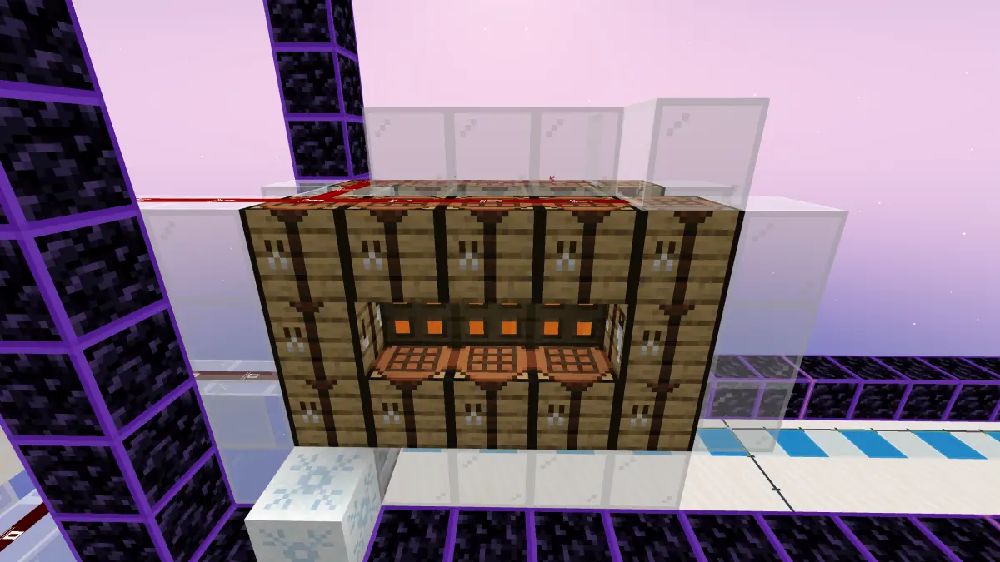
红石信号高频没什么好说的，破门器 2.5Hz就是每 8gt破门/点门一次。发射器需要每8gt激活两次也就是每4gt激活一次，所以发射器是每 4gt输入 2gt的基岩版频率最快的高频。引火架需要每 8gt活动一次，也就是每 16gt输出 8gt脉冲。注意这里千万别用侦测器高频，因为侦测器也属于受pt影响的元件，此处高频的侦测器仅用于提供初始的短脉冲。
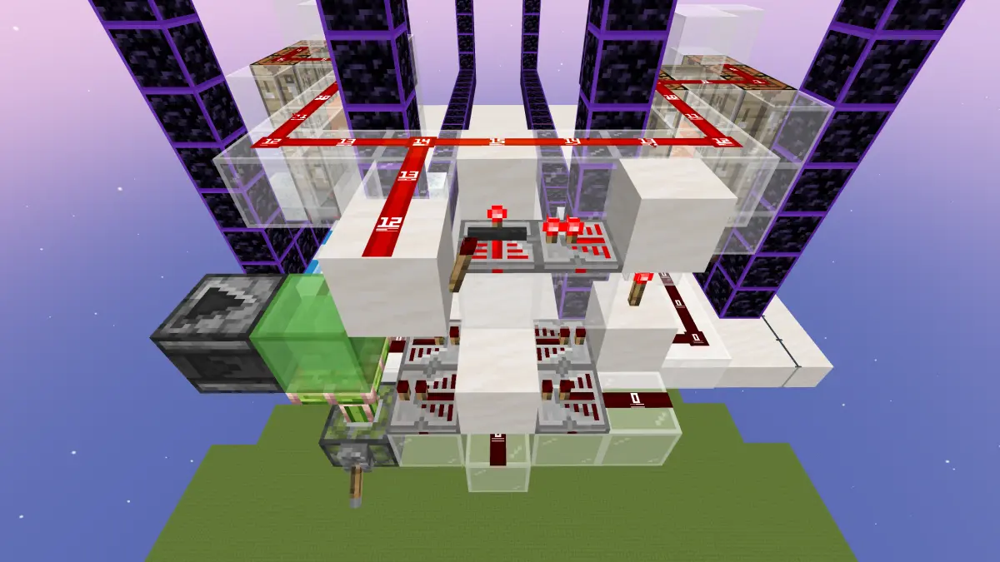
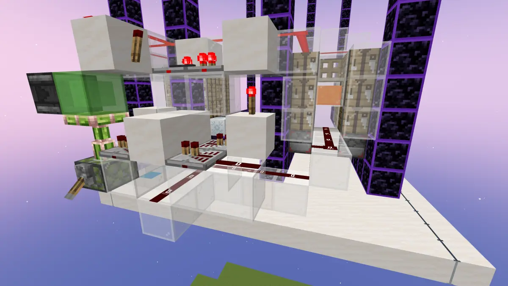
最后做个总结，通过巧妙设计传送门门实现pt堆积，在同一gt内让发射器完成细雪桶的喷出、收回，以及熔岩的引火，我们就完成了静态闪门猪人塔的制作。
顺带提醒，26.0+版本存在一种上不了矿车的僵尸猪灵，使用矿车聚集处死时需要用细雪或海龟蛋作为处死的补充。
最后，我十分感谢为这篇文章做出巨大贡献的大佬：
@8848yyds 提供了代码支持和文章指导
希望这篇文章对大家有所帮助！
A. 传送门方块每次随机 tick 时发生什么：
void PortalBlock::tick (
::BlockSource& region,
::BlockPos const& pos,
::Random& random
){
auto& block = region.getBlock(pos);
auto portalAxis = block.getState<TorchFacing>(VanillaStates::PortalAxis());
auto portalShape = PortalShape(region, pos, portalAxis);
auto& dim = region.getDimension();
if (portalShape.isValid() && portalShape.isFilled()) {
auto portalRecord = portalShape.createRecord();
auto& poralForcer = region.getLevel().getPortalForcer();
auto dimId = region.getDimensionId();
if (!poralForcer.portalRecordExists(dimId, portalRecord)) {
poralForcer.addPortalRecord(dimId, portalRecord);
}
}
if (SpawnChecks::canSpawnPigZombieFromPortal(dim, random)) {
PortalBlock::trySpawnPigZombie(region, pos, portalAxis);
}
}B. 生成概率与难度的关系：
static bool PortalBlock::canSpawnPigZombieFromPortal(::Dimension const& dimension, ::IRandom& random) {
auto& level = dimension.getLevel();
auto& gameRules = level.getGameRules();
if ((*gameRules.mGameRules)[static_cast<int>(GameRules::GameRulesIndex::DoMobSpawning)].mValue->boolVal) {
int randomValue = random.nextIntInclusive(0, 1999);
int difficultyValue = static_cast<int>(level.getDifficulty());
return randomValue < difficultyValue;
}
return false;
}C. 寻找生成位置并生成：
void PortalBlock::trySpawnPigZombie(
::BlockSource& region,
::BlockPos const& pos,
::PortalAxis axis
){
Vec3 _pos = pos;
while (_pos.y-- > 1) {
if (region.canProvideSupport(_pos, 1, ::BlockSupportType::Any)
// && !region.isSolidBlockingBlock(_pos.x, _pos.y + 1, pos.z)
// 源码中的判定条件，但是据我所知没有任何一个固体方块不给上方提供支持，所以源码中这条判定完全是多余的
) {
if (axis == PortalAxis::Z) {
_pos.x += 1.5f;
_pos.z += 0.5f;
} else if (axis == PortalAxis::X) {
_pos.x += 0.5f;
_pos.z += 1.5f;
}
_pos.y += 1.1f;
ll::service::getLevel()->getSpawner().spawnMob(
region,
ActorDefinitionIdentifier("minecraft:zombie_pigman"),
nullptr,
_pos,
false,
true,
false
);
return;
}
}
}这张表展示了猪人塔每gt的准确事件。当 8gt结束时，再从 1gt开始循环，以此往复。
这是一个修复猪人无法上车的行为包，也是 @8848yyds 提供的哦~